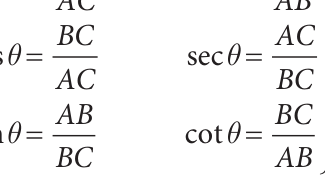
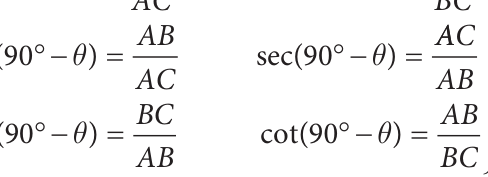
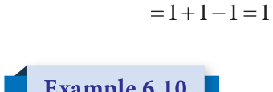

Recall that two acute angles are said to be complementary if the sum of their measures is equal to \(90 ^{\circ}\) .
What can we say about the acute angles of a right-angled triangle?
In a right angled triangle the sum of the two acute angles is
equal to \(90 ^{\circ}\) . So, the two acute angles of a right angled triangle are always complementary to each other.
In the above figure 6.13, the triangle is right-angled at B. Therefore, if \(\angle C\) is \(\theta\), then
\(\angle A = 90^\circ - \theta\) .
We find that Similarly for the angle (90ϒ - θ ), We have
sin cosec sin( ) cosec( ) cos ....()1 cos( ) .....(2) tan tan( )


Comparing (1) and (2), we get
\(\sin\theta = \cos(90^\circ - \theta)\) \(\csc\theta = \sec(90^\circ - \theta)\)
\(\cos\theta = \sin(90^\circ - \theta)\) \(\sec\theta = \csc(90^\circ - \theta)\)
\(\tan\theta = \cot(90^\circ - \theta)\) \(\cot\theta = \tan(90^\circ - \theta)\)
Express (i) \(\sin 74^\circ\) in terms of cosine (ii) \(\tan 12^\circ\) in terms of cotangent (iii) \(\csc 39^\circ\) in terms of secant
Solution
- \(\sin 74^\circ = \sin(90^\circ - 16^\circ)\) (since, \(90^\circ - 16^\circ = 74^\circ\)
RHS is of the form \(\sin(90^\circ - \theta) = \cos\theta\)
Therefore \(\sin 74^\circ = \cos 16^\circ\)
- \(\tan 12^\circ = \tan(90^\circ - 78^\circ)\) (since, \(12^\circ = 90^\circ - 78^\circ\)
RHS is of the form \(\tan(90^\circ - \theta) = \cot\theta\)
Therefore \(\tan 12^\circ = \cot 78^\circ\)
- \(\csc 39^\circ = \csc(90^\circ - 51^\circ)\) (since \(39^\circ = 90^\circ - 51^\circ\)
RHS is of the form \(\csc(90^\circ - \theta) = \sec\theta\)
Therefore \(\csc 39^\circ = \sec 51^\circ\)

Evaluate: (i) \(\frac{\sin 49^\circ}{\cos 41^\circ}\) (ii) \(\frac{\sec 63^\circ}{\csc 27^\circ}\)
Solution
- \(\frac{\sin 49^\circ}{\cos 41^\circ}\)
\(\sin 49^\circ = \sin(90^\circ - 41^\circ) = \cos 41^\circ\), since \(49^\circ + 41^\circ = 90^\circ\) (complementary).
Hence on substituting \(\sin 49^\circ = \cos 41^\circ\) we get, \(\frac{\cos 41^\circ}{\cos 41^\circ} = 1\)
- \(\frac{\sec 63^\circ}{\csc 27^\circ}\)
\(\sec 63^\circ = \sec(90^\circ - 27^\circ) = \csc 27^\circ\), here \(63^\circ\) and \(27^\circ\) are complementary angles.
We have \(\frac{\sec 63^\circ}{\csc 27^\circ} = \frac{\csc 27^\circ}{\csc 27^\circ} = 1\)
Find the values of (i) \(\tan 7^\circ \cdot \tan 23^\circ \cdot \tan 60^\circ \cdot \tan 67^\circ \cdot \tan 83^\circ\)
(ii) \(\frac{\cos 35^\circ}{\sin 55^\circ} + \frac{\sin 12^\circ}{\cos 78^\circ} - \frac{\cos 18^\circ}{\sin 72^\circ}\)
Solution
- \(\tan 7^\circ \cdot \tan 23^\circ \cdot \tan 60^\circ \cdot \tan 67^\circ \cdot \tan 83^\circ\)
\(= \tan 7^\circ \cdot \tan 83^\circ \cdot \tan 23^\circ \cdot \tan 67^\circ \cdot \tan 60^\circ\) (Grouping complementary angles)
\(= \tan 7^\circ \cdot \tan(90^\circ - 7^\circ) \cdot \tan 23^\circ \cdot \tan(90^\circ - 23^\circ) \cdot \tan 60^\circ\)
\(= (\tan 7^\circ \cdot \cot 7^\circ)(\tan 23^\circ \cdot \cot 23^\circ) \cdot \tan 60^\circ\)
\(= (1)(1) \cdot \tan 60^\circ = \sqrt{3}\)
- cos35 sin12 cos18
sin55 cos78 sin72 since cos(90 55 ) sin(90 78 ) cos(90 72 ) cos35 \(^{\circ} =\) cos(90 \(^{\circ} - 55 ^{\circ}\) sin55 cos78 sin72 sin12 \(^{\circ} =\) sin(90 \(^{\circ} - 78 ^{\circ}\) cos18 \(^{\circ} =\) cos(90 \(^{\circ} - 72 ^{\circ}\)
sin cos sin72 sin cos sin72

(i) If \(\csc A = \sec 34^\circ\), then find \(A\). (ii) If \(\tan B = \cot 47^\circ\), then find \(B\).
Solution
- We know that \(\csc A = \sec(90^\circ - A)\)
\(\sec(90^\circ - A) = \sec 34^\circ\)
- We know that \(\tan B = \cot(90^\circ - B)\)
\(\cot(90^\circ - B) = \cot 47^\circ\)

We get \(90^\circ - A = 34^\circ\), so \(A = 56^\circ\). We get \(90^\circ - B = 47^\circ\), so \(B = 43^\circ\).
Find the value of the following:
cossin cossin cos cossin cossin sin(cos ) cos
- \(\tan 15^\circ \tan 30^\circ \tan 45^\circ \tan 60^\circ \tan 75^\circ\)
\(\frac{\cot\theta}{\tan(90^\circ - \theta)} + {\cos(90^\circ - \theta)\tan\theta\sec(90^\circ - \theta)}\sin(90^\circ - \theta)\cot(90^\circ - \theta)\csc(90^\circ -\) q)

6.4 Method of using Trigonometric Table
We have learnt to calculate the trigonometric ratios for angles \(0 ^{\circ}\) , \(30 ^{\circ}\) , \(45 ^{\circ}\) , \(60 ^{\circ}\) and \(90 ^{\circ}\) . But during certain situations we need to calculate the trigonometric ratios of all the other acute angles. Hence we need to know the method of using trigonometric tables.
One degree \((1 ^{\circ}\) is divided into 60 minutes (60 ' ) and one minute (1 ' ) is divided into 60 seconds (60 ' ' ). Thus, \(1 ^{\circ} = 60\) ' and \(1' = 60''\).